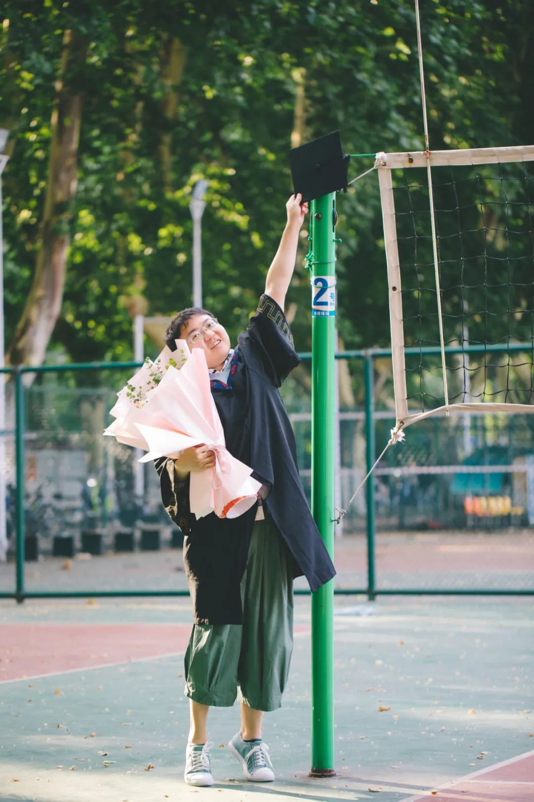

共计6334个字，2张图
坐上高铁，我拿出平板随手涂涂画画。说要写点什么、或者画点什么，都是虚假。真正的目的是掩饰一下好像已经逃逸了的锐气。
去武汉是为了返校参加毕业典礼。大师兄周一和我说毕业聚餐的事，从周五改到周三。那时候我还不知道毕业典礼是哪一天，学弟告诉我在周三早上。组里又将毕业聚餐调到了周二晚上，于是周二一早，我坐上了高铁。票和以前一样，上了长沙地铁之后再买。
之所以说少了锐气，并不一定指向这个词本来的含义。我知道这个词本来的意思是什么，但就是要这么说。这次，这个词refer to一些好像无关乎自己的样子，譬如我进学校后第一餐吃的就是烤肉脆皮鸡双皮沙拉番茄酱，在小吃城，等我离开的时候，小吃城就关了（不知道会关到哪一天）。锐气消失的感觉是，噢，它关了，我好像是少了一个以前提着个塑料泡沫盒回寝室吃饭的回忆，但是这又有什么关系呢？That is what I call devitalization. 这个单词也不太准，没关系，我想说的含义已经说清楚了。
一直等核酸的结果。我前一天晚上的检测结果，硬等到12:02才出。等武汉的落地检结果出来，也已经到了晚上八点。为了稍微拖点时间而又不至于太无聊，我就从武汉站坐地铁去学校，这得快一个小时。一路上看地铁站站名，“本次列车终点站柏林”，就会一路想起所有我从那些不同的站下地铁之后去拍照的时间。
我有个无聊的习惯，就是随便背一些站名、地名，类似reconstruct一个城市的地理方位在我脑海中的构图。不仅是长沙、武汉、新加坡，有时候我也会尝试复刻其他我去得多的城市：北京、南京、上海，不过那就常常不成功。也不非得是城市，还有和金记者一起背京广线：深圳、东莞、广州、虎门、清远、韶关、郴州、衡阳、株洲、长沙、汨罗、岳阳、赤壁、咸宁、武汉、随州、孝感、信阳、南阳、郑州、安阳、新乡、邯郸、鹤壁、石家庄、保定、北京。漏了很多也说不定有南北错位的，毕竟这是我刚刚一边写的时候自己一个人背的，也没有去qualify
到南三门，原来的班长liww接我去小吃城吃中饭。彼时有太多这样的中午，从小吃城拿个双拼，打包在塑料碗里面：一来食堂里没地方做，二来寝室里比这要凉快多了。难得拿盘子吃一次，有点不习惯，但是菜味一点也没有变。我和几个校友问过，你有没有再找到过什么好吃的烤肉饭或者脆皮鸡，回答都是，你去吃小吃城的吧。
而且这里总是不间断开着的。做实验做过了时间，正常标准的西一这些地方没得饭吃了的时候，就只能冲小吃城。所以ta的服务时间和内容，就决定了这会成为一个不那么正常但是很好玩的小地方。再加上一些简陋的排风和制冷装置，毕业后能回忆起的都是带特色的东西。
食堂打饭师傅按照正常的量给我打。没想到吃不完了。住紫菘的时候，不光点的配菜是土豆，而且还要找食堂师傅加饭。虽然很好吃，但我不刻意去撑自己的话，已经吃不完了。
路过校史馆。班长说校史馆为了迎接校庆，现在开始维修。我笑了。这非常科，虽然也不非得来这里拍照，但多少是个有纪念意义的点。现在就关了放在这里，赶工期也等不了毕业生拍照的这几天。
去实验楼。在课题组转了一圈，见到了前后两位班主任。班主任问我，你怎么回来了呢？正好师兄和我一起下楼，我说师兄要博士毕业了，我回来送他毕业。班主任开始笑：哇那你师兄面子还挺大的，把你也喊回来一起吃饭了。连打趣也带着原来在班上的味道。
师兄把小电驴借给了我。骑上小电驴，返校就真的回来了。虽然时不时会忘记，但又时不时会想起“我已经毕业两年了。”在滚火的太阳底下骑车，阴凉的地方不同程度地蓄积着柳絮，呛得人呼吸道挠疼，我会忘记；骑到集贸，Mr.DT 和ki哦说在演插排等我，我看到这三个字的时候脑子直接忽略过去，留下的印象变成了厦门的演武路。等到在M记门口，找不到地方，我发现这的确是变了。
和原来在杂志社的老铁们在集贸包了一束花。租了两套学士服，工学学士Mr.DT和理学学士张衔瑜。老铁和我一级，他毕业的时候也没有毕业照，于是回沁苑去整理仪表。
感觉就还和以前完全一样啊。老铁拍我和老铁，感觉就像以前猝不及防地喊一声今天吃饭，也不管为什么今天就见面了今天就出门了，今晚结账之后A不A到底谁发生什么事了你哭还是我哭。都完全一样。

去青年园。老铁以前是土木专业的。看到有学弟学妹在里边做测绘，于是去借仪器拍照。我想我这样一直在电脑前工作，会不会也哪一天也要去蹭化学实验室的玻璃仪器和其他的制备、表征装置。老铁借完拍完照之后还鼓励鼓励学弟学妹，看得我直接在旁边笑爆。
拍完四年顶个球之后，突然在路上被人叫住“学长！真的是你啊！”我也也不曾想昨天在QQ空间，我捞人说有没有在学校参加毕业典礼/拍照，学妹在底下留言，今天就见面了。两年之后返校，在路上还会被原来新闻组织里的学妹叫住，一起拍学士服照片。大学生活的很多面，有很大的一面就是在路上走着，随时都不曾想地会遇到认识的人。其实和两位老铁，我们也是一个部门里的。只不过这个部门，从我们这里就没有下一波承接了。
上一次和老铁们分别，还是在两年半前的杨泗港大桥。从我们家创意料理吃过饭，然后我开着共享汽车往杨泗港去，在我记不得是张公堤还是武公堤的那一段走啊走，一直走到杨泗港大桥上。因为看到这边是武汉最新，也是最漂亮的桥，一直说要来看一次。
分别、毕业，差离一点都不会知道下一次是见面是什么时候、会在哪里。有人和我说，现在何必为分离而觉得难过，那些会再次相见的就一定会再次相见。是呢，除了貔貅，没有谁可以把所有的金币、所有的关系都攒在手里。可除非是为了宽心，不然我为什么不能为了当下的离别而委屈自己的感受、为什么要用没有兑换日期的焦虑来蒙蔽向过去高喊而没有回音的渺茫。
平素在生活中，我也会尝试找到仪式感。并非来源于我不知道，有些仪式并非必要，譬如毕业典礼不过是拿到毕业证和学位证、婚礼不过是结婚证和向几位亲朋宣布、寿宴也就是事主痴长几岁。这些都算大的仪式，而那些小了去了的，今天在路上看到有人带了一束花、路边的修勾下台阶时一不小心摔倒了、河边下象棋的人抽烟动棋的样子很像一位将军。我理解的这是把生活当成细糠来磨，而不是和成猪潲、撮到槽里，毕竟猪只要壮就能出栏。
晚上是送大师兄和其他两位师兄的毕业餐，师弟带了一箱酒到场，冰镇在准备间里甚是好看。打视频给我的本科好基友，放在桌子上一圈转下来地聊聊天。餐后老师骑车走，我们一行人就散着步，从用餐的地方回到学校，随便说说话、吹吹晚上的热风，在路边的半栏车上买个大西瓜，分别除了是个终点，其余和往常没什么两样。
回学校试了试熊猫校车，私以为只是改了个外观。倒也没多大差别。

下车，和班长小凝从化学楼门口一直溜到紫菘。校车停到这里和之前听到西八楼门口差不多远。
凌晨，我回到如家休息下来，传了前一天的照片上网盘，已经快凌晨一点了。放松双腿肌肉，觉得比在健身房搞了有氧又去爬山还累。定了一个早上五点四十的闹钟。
忽而觉得时间到了该醒来了。于是翻身开灯，等眼睛适应一下灯光，然后开始穿戴学士服。准备出门的时候，看了一下表，时间01:46，开始离谱。又重新板回床上继续睡。
早上六点进校，liww在西一接我吃早餐。衔瑜的选择是：炸酱热干面、银耳羹、紫米糕，都是我以前常吃的。除了小吃城的烤肉脆皮鸡双拼之外，我觉得基科食堂最能拿出手的就是西一的银耳羹和西瓜凉粉、东一的碎牛肉双拼卤肉饭和石锅拌饭、喻园汤包、集锦麻辣鸡丝拉面、东一二楼香锅、西一清真大盘鸡、集贤红烧肉。下了绝望坡就只能去CBD了，以前还有小吃街，不过西边古德鸡王我也还没点名，按下不表。
进场，上一次有印象的进光体，好像还是开学典礼。总之是军训那会儿。这一次毕业没有校徽环节，我自己的校徽也不知道去哪了。终于到会场了，七八千人在内，毕业实感从哪里来呢？
开始大合唱，七八千人挥舞小红旗的合唱：《倔强》和《晴天》。五月天的声音一到，我就觉得上头了，是这样的感觉是这样的感觉没错。大一的时候，给学长学姐做毕业册。那时候我不会排版也不怎么会拍照，就只写文字、然后做一些分发调配，操作的时候一点毕业的感觉都没有，只能按照原来在雅礼那余威尚存的毕业季来还原出一点词句。
这一次来之前我曾经怀有很强的索取心理，主要体现在别人问我待多久，我说就待完本科毕业典礼这一天。别人追问，第二天是研究生毕业典礼，怎么不也参加呢？我说我只来要回原本属于我的，我只来要回这个学校欠我的。
是的，我一直没把那年2020年的学校毕业典礼当一回事，那年我只参加了院里的线上毕业典礼，学校的毕业典礼我甚至直接睡过去了。也不是有意的，而是我知道返校了也去不成毕业典礼，那倒也就根本没有关注毕业典礼哪一天开。直到醒来了之后，快到下午了，才看到朋友圈一万个人发的图和点赞，我才知道原来今天是毕业典礼。
开了个倍速看完。只记住了校长的一段话：“今天因为疫情没能到校的2020届毕业生，今后每年毕业典礼，学校都会对你们虚位以待，欢迎你们在任何一年回来参加毕业典礼。”
但是这种索取心理，在前一天和老铁的聊天谈笑、和老师课题组的聚餐之后，进入会场，我反而变得从容起来。不知道怎么解释这种变化，也许是我开始回归在学校一直待着的学生感受。连高人也说，拍的照片上看起来的样子，也像一个本科生了。
还好暖场的拉歌没有刘若英的《后来》，这是前一年的曲目。换我直接得先中途离场片刻，可以不干扰他人了再进来。
直播的镜头扫过我这一片，原来的同班同学问我是不是在现场，我说是。
本科导师中午见到我，问我校长讲话讲了什么。我一时语塞。只记得过来作为校友代表讲话的是中国探月工程的副总设计师。导师又问我他讲了什么，我也没有回答得上来。
过后，看到学姐发了2010-2013年，这四年间老校长李培根院士的本科生毕业致辞。于是在想教师应该怎样教书、学生应该怎样学习，这个问题约莫从我建号的时候开始起，就间或讨论一些、然后又冷不丁在哪一篇里边冒出来。
典礼进行中，虽然坐得离一号主席台只有不到十米，但是大部分时间我都处在放空状态。要么就是在回忆之前军训时一位将军在讲席讲话，我喝了一口水，把教官吓得要命；在观察台上没有讲话的人都做些什么；在想我都还没有拿笔做事，台上的人到底拿着铅笔在写什么；以及观察直播机器里，那个给操作员看的小屏幕里放着什么样。
就和之前上课恍神一样，一秒之前还在劳动西路428号主教学楼6楼看操场，一秒钟坐在C12 N102看满版的板书，一秒钟后挂起了程序拉起了窗帘在138601 SG看日落。一秒钟回到现实，毕业典礼结束，准备进入各分会场拨穗。
和我在朋友圈写的一样
两年前应该我毕业的时候，没有返校。那次去了湖师大数学系，蹭了一次毕业典礼，缘分所到，为我拨穗的教授是华科85届毕业生。去蹭了人家的毕业典礼，而且也蹭到了，作为回赠地帮那一年数学系拍了全系的毕业照。
去年返校，因为行程卡受限。于是说下一年还等不等得到呢？
这周一，大师兄通知我吃毕业餐，我还不知道今年毕业典礼几时举行。还好，一切又都赶上了。走到一号主席台上，校长为我拨穗、授学位卷轴。又走到老校长旁边：“校长好，我是20届毕业生，可以抱一下您吗？”○○说：“来吧！”然后我发现我抱不动他🤺
典礼的仪式到这也就完全了。合唱的「晴天」里写着：“没想到失去的勇气我还留着。”对已经毕业两年的人来说更remind me of something
很多的合照和拥抱，毕业时间释放了我们多久以来对于生活的纪念需要。
中午本科导师说请我吃饭。导师举杯祝我两年后的毕业快乐，我后来一想，那这餐应是谢师宴了，应该是我请才对。征求导师意见之后，导师没收了我的手机。导师说，等你博士毕业了再请我吃饭吧（我有些愣），怎么对博士毕业没有信心啊？我说，确实。
打理了一下外表之后，去见了几位在科研和行政上帮助过我的老师。也进C12看了看
教务和学工的老师都能喊出我的名字。即使第一句话叫不出来的，也会说，噢你就是那个，你是长沙的对不对，你还是雅礼的。其他老师就会笑，你的名字开始模糊了，但是脸和标签会挂在一起。
从行政楼出来，在楼下巧遇了马上要去领双证的学姐不白于言.，我笑说如果再晚一点的话，我就骑车到紫菘去了；学姐说本来早上要领的，但我就是拖到了下午，而且如果不是紫菘又大停电了，我也不会出来。我心想这可真是毕业季，马上临近毕业了还要来一次紫菘大停电，literally提醒同学们不要忘本。
在西操排球场等人来，就像很久以前在球队群里发了通知之后，准备开始集训的样子。那样的话我就应该再买一件水过来。
小雨、糊糊和闪闪带来了两捧花，一捧向日葵给要毕业的赤赤、一捧粉蔷薇给我。把相机递给闪闪，我的确不多在排球场留下自己的照片。以前，大一的时候没有替补队员也就不存在有人来拍我们；大二我在场上，没有嘱咐一位拍照的人；大三了我开始掌镜，拿着手机或者拿着XT-3，大四拿着现在的相机，大多数时候还是我在拍别人、或者就只是景。

真好，把相机交给别人，我只用选片和后期调色。学弟赤赤也要毕业了，在球场上搭档过无数回的人，默契也是一点就来。掌镜的学妹和学弟跟我说站位和姿势的时候，感觉就像是以前在球场上一样，这个扣球应该这样扣、那个二传应该给到哪里。我从来就不是球场里技术话事，我是专门待在场上或者旁边的气氛组。指令给到我这边以及再做调整，在球队的同学之间感觉就是一件自然而然的事情。
最后一个场景，回到排球场，就像回到了梦的起点。我大学生活里，两个我曾经下过大气力的组织：一张报纸和一本杂志，是在朋友和我的手上振作起来的，但在大二下不再存在；一个我加入的新闻组织，一直听说的优秀出稿，我也参与提供了一些操作思路、做了一点理想主义的工作，但那时候科研已经占据了我近半的时间；锚定首尾，排球场完整见证了我的大学社团生活，从懵懂地打一天球，晚上在小吃城老队长请我吃脆皮鸡双拼，到带起了一支大队伍，每次训练都要带一篓子球，霸两个全场红红火火。
和赤赤在网前试了一下起跳扣球，最后决定还是不拍这个动作了。因为做不好。感觉穿着学士服只能跳一点点高，而且动作规范都被收束在了袍子里。于是就不拍了。
复刻了一些原来的动作。也令人惊讶原来到底是在什么样的身体条件，比如屈伸啊之类的情况下，可以做出那么伸展的动作来。很是神奇。
梦在最后做完这一组动作，拥抱之后，是结束。
回十栋去拿我的包，遇到宿管阿姨。宿管阿姨可以不假思索地喊出我的名字，说我以前会拿自己出的报纸回寝室。阿姨在二楼看地板的漏水情况，我说：阿姨，这次我带行李走了，就是真的走咯。
路过紫菘大屏幕，学弟小泽承平在西操路口接到我。上次吃饭转场了两波，一餐在武汉日本人聚居区的芥鳗屋，旁边人说日语；一餐在西校门外回民烧烤，旁边人不知道说什么语。选择去了M记，这次旁边人都在说中文了。
两年前我也写过一篇有关毕业的推文，但是那一次没有写完。想写四年的，可是只把大一的事情粗糙地整理完，就已经结束。
那一篇的名字叫《森林风有信》
开头是这样写的
前段时间碰到了一个刚退休的长辈，知道我的学校之后，问我住东边还是住西边。因为和他也不很熟，回答了之后想着，也许他的小孩或者有很熟悉的晚辈和我一个学校吧。萍水相逢的聚会，只不过比缘悭一面高了一点点。
后来又一次遇到，他像酝酿了很久词句一样地突然和我说“我约莫算你的师兄了”
“当时我住在东五舍，才恢复高考，还叫华中工学院新闻系。所以我问你住东边还是西边。校长是朱九思，我们那时候就觉得在树荫底下，夏天学校里的温度已经比校外低不少了。”
“毕业后差不多三四十年，好几次经过武汉。前几天犹豫一下，后来想，还是留个念想吧。”
我在前几天晚上回忆他说的这些话时，就已经有些模糊了。写在朋友圈分享的栀子花白花瓣旁边，我把他住的东五舍写成了东八舍。也许有一天我也会记错西五西十二。什么是清楚？什么是糊涂？
最后浅说明一下，的确没有贴和朋友们的合照以及在光体会场里的照片。因为都放在朋友圈和空间这些mutual friends所熟知的地方了。
最后，引述大一我写在毕业刊：
期年以后，
是浓墨重彩，还是素淡清雅，
是波澜壮阔，还是冷月舷窗，
悉听尊便。